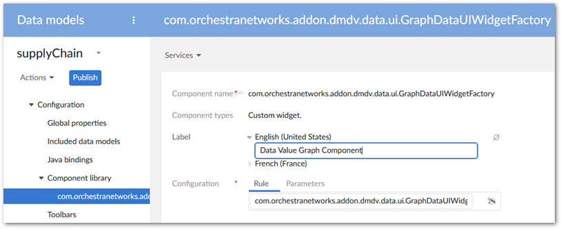
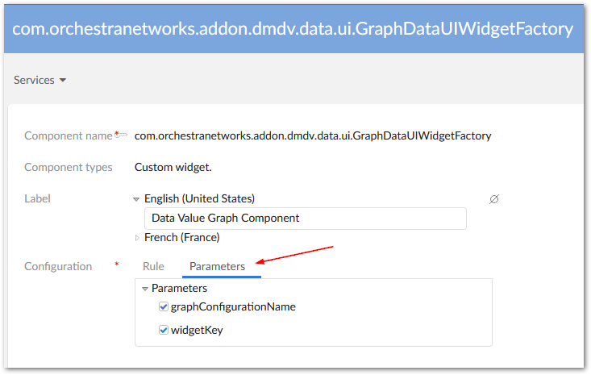
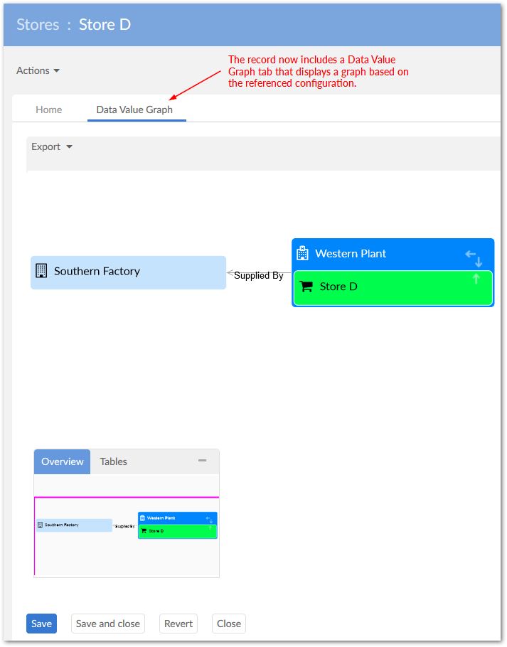
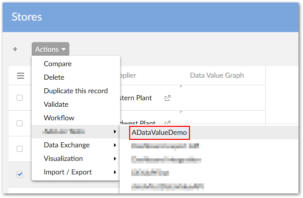
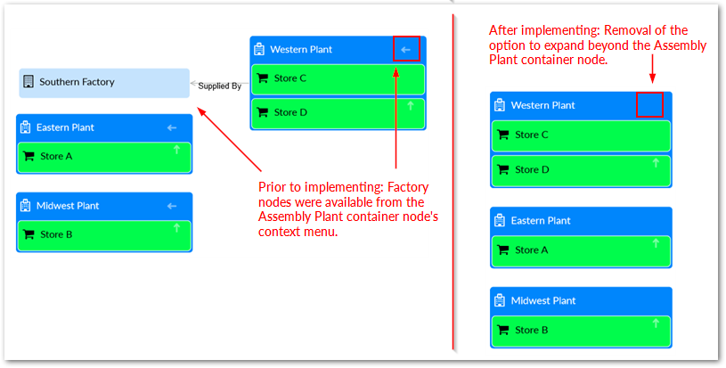

The API allows you to:
create a service that displays an existing data value and relationship graph—one already configured using the add-on. You can add the graph to a widget and display it on a tab of an open record. See Displaying a graph in a UI tab.
filter which nodes and links display in a data value and relationship graph. See Filtering data values and relationships for an example.
The API provides a sample widget you can use to display an existing data value and relationship graph in a UI tab. When users view a record, they can select the tab that displays the graph. To display a data value graph in a UI tab:
Add the EBX® Data Model and Data Visualization Add-on's com.orchestranetworks.addon.dmdv.data.ui.GraphDataUIWidgetFactory component to the desired data model. As shown below, the full name of the component must be included in the Configuration field.

Select the Configuration's Parameters tab and enable both parameters.

In the navigation pane select the table where the tab will be added. On the Advanced properties tab, under Table > Presentation > Default rendering for groups in forms > Enabled rendering, enable the tabs option. Save your progress.
Add a Group child element to this table.
Set the Minimum number of values property to 0. This setting doesn't change the ability to display the graph, but prevents a validation message from displaying.
Select the Advanced properties tab and under Default view and tools:
Enable the As tab option under Rendering in forms.
In the Widget group's Component tab select the component created in previous steps.
Select the Parameters tab and enter the configuration name for the graph you want to display. Enter the following in the widgetKey parameter: com.orchestranetworks.addon.dmdv.data.ui.GraphDataTabUIWidget.
Set Access properties to Read only. Save your progress.
To test, navigate to the updated table, open a record, and select the new tab.

You can write a service from which users can generate an existing data value and relationship graph. As the following sample shows you use UIHttpManagerComponent.getComponentForGraphDataService to generate a web component containing a data value graph. The GraphDataSpec instance must set the graph name that of an existing value and relationship graph configuration. When you register the service in module.xml, its scope must be set to onRecord. Currently, the API only supports the selection of one record. For more information on writing services, see the EBX® product documentation.
You can use GraphDataSpec to enable or disable specific graph features. The GraphDataFeatures class enumerates these features.
/*
* Copyright Orchestra Networks 2000-2008. All rights reserved.
*/
package com.orchestranetworks.addon.dmdv.userservice;
import com.onwbp.adaptation.*;
import com.orchestranetworks.addon.dmdv.data.ui.*;
import com.orchestranetworks.ui.*;
import com.orchestranetworks.ui.selection.*;
import com.orchestranetworks.userservice.*;
/**
*/
public class ADataValueDemo implements UserService<RecordEntitySelection>
{
@Override
public void setupObjectContext(
UserServiceSetupObjectContext<RecordEntitySelection> context,
UserServiceObjectContextBuilder builder)
{
}
@Override
public void setupDisplay(
UserServiceSetupDisplayContext<RecordEntitySelection> context,
UserServiceDisplayConfigurator config)
{
final Adaptation record = context.getEntitySelection().getRecord();
if (record != null)
{
config.setContent(new UserServicePane()
{
@Override
public void writePane(UserServicePaneContext context, UserServicePaneWriter writer)
{
String GRAPH_CONFIGURATION_NAME = "SupplyChainConfiguration";
// Initiate an instance of Graph Data Specification and set the graph name to a working configuration
GraphDataSpec graphSpec = new GraphDataSpec();
graphSpec.setGraphConfigurationName(GRAPH_CONFIGURATION_NAME);
// Prepare the necessary info: record selection and place holder for graph
writer.add("<div id='" + GRAPH_CONFIGURATION_NAME + "' style='height:100%;'>");
writer.add(
"<iframe id='" + GRAPH_CONFIGURATION_NAME
+ "_frame' width='100%' height='100%'");
// Use GraphDataHttpManagerComponentUtils to generate a web component containing the graph
UIHttpManagerComponent comp = GraphDataHttpManagerComponentUtils
.getComponentForGraphDataService(writer, record, graphSpec);
// Insert graph component URL into the prepared iframe to display
String url = comp.getURIWithParameters();
writer.add(
" frameBorder='0' style='border-width: 0px; ' src='" + url + "'></iframe>");
writer.add("</div>");
}
});
}
}
@Override
public void validate(UserServiceValidateContext<RecordEntitySelection> context)
{
}
@Override
public UserServiceEventOutcome processEventOutcome(
UserServiceProcessEventOutcomeContext<RecordEntitySelection> context,
UserServiceEventOutcome eventOutcome)
{
return null;
}
}
As shown below, the service is available from the Actions menu:

You can use a Java class to filter out values and relationships from a graph. After creating the class, it must be declared in the data value and relationship graph configuration. The following example describes a basic filter. For a more in-depth description, see the API documentation:
As shown below the class must implement the DisplayFilter interface and basic logic to determine which nodes should be filtered out. The accept() is called on each link in the graph during generation. If it returns True the link and related nodes display.
package com.orchestranetworks.addon.test.dmdv.model;
import com.orchestranetworks.addon.dmdv.data.filter.*;
import com.orchestranetworks.schema.*;
public class FilterNodes implements DisplayFilter
{
@Override
public boolean accept(FilterContext context)
{
NodeContext factoryNodeContext = context.getLink().getEndNodeContext();
Node factoryNode = factoryContext.getNode();
Record factoryRecord = factoryNode.getRecord();
String factoryName = factoryRecord.get(Path.parse("./factory")).toString();
return !factoryName.contains("Factory");
}
}
Open the Link configuration from which you want to filter values. In the Custom filter class enter the qualified path to the created filter.
The following image shows a graph before applying the filter and after:
